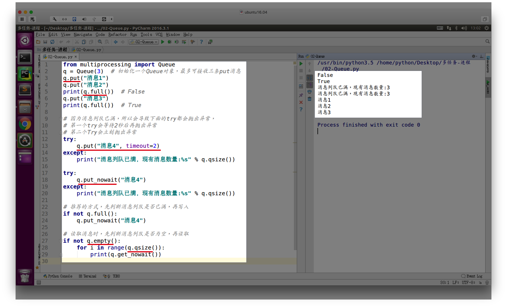
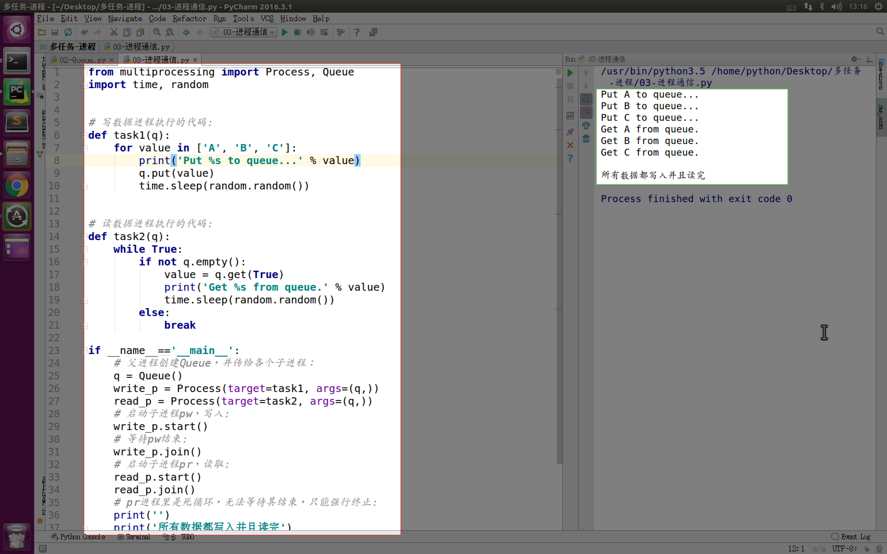

进程间通信-Queue
1. 引入
进程间是相互独立的，数据不共享，但有时需要数据共享，就需要进程间通信（IPC）
例如之前学习的网络编程udp、tcp，其实就是一种实现多进程间数据共享的方式，只是它通过套接字（socket）实现了不同电脑上的进程间通信
如果在一台电脑上不同进程间通信，就可以用其它的方式实现（知道即可，不需要深入研究，研究操作系统时才需要深入研究它们）：
- 文件（一个进程写入到文件，一个进程从文件中读取）
- 共享内存
管道
等等
本小结我们用的队列来实现
2. Queue的使用
可以使用multiprocessing模块的Queue实现多进程之间的数据传递
from multiprocessing import Queue
q = Queue(3) # 初始化一个Queue对象，最多可接收三条put消息
q.put("消息1")
q.put("消息2")
print(q.full()) # False
q.put("消息3")
print(q.full()) # True
# 因为消息列队已满，所以会导致下面的try都会抛出异常，
# 第一个try会等待2秒后再抛出异常
# 第二个Try会立刻抛出异常
try:
q.put("消息4", True, 2)
except:
print("消息列队已满，现有消息数量:%s" % q.qsize())
try:
q.put_nowait("消息4")
except:
print("消息列队已满，现有消息数量:%s" % q.qsize())
# 推荐的方式，先判断消息列队是否已满，再写入
if not q.full():
q.put_nowait("消息4")
# 读取消息时，先判断消息列队是否为空，再读取
if not q.empty():
for i in range(q.qsize()):
print(q.get_nowait())
运行结果:

说明
- 使用
Queue()时，若括号中没有指定最大可接收的消息数量，或数量为负值，那么就代表可接受的消息数量没有上限（直到内存的尽头） - Queue的几个方法功能说明：
Queue.qsize()：返回当前队列包含的消息数量Queue.empty()：如果队列为空，返回True，反之FalseQueue.full()：如果队列满了，返回True,反之FalseQueue.get([block[, timeout]])：获取队列中的一条消息，然后将其从列队中移除，block默认值为True- 如果block使用默认值，且没有设置timeout（单位秒），消息列队如果为空，此时程序将被阻塞（停在读取状态），直到从消息列队读到消息为止，如果设置了timeout，则会等待timeout秒，若还没读取到任何消息，则抛出
Queue.Empty异常 - 如果block值为
False，消息列队如果为空，则会立刻抛出Queue.Empty异常
- 如果block使用默认值，且没有设置timeout（单位秒），消息列队如果为空，此时程序将被阻塞（停在读取状态），直到从消息列队读到消息为止，如果设置了timeout，则会等待timeout秒，若还没读取到任何消息，则抛出
Queue.get_nowait()：相当Queue.get(False)Queue.put(item,[block[, timeout]])：将item消息写入队列，block默认值为True- 如果block使用默认值，且没有设置timeout（单位秒），消息列队如果已经没有空间可写入，此时程序将被阻塞（停在写入状态），直到从消息列队腾出空间为止，如果设置了timeout，则会等待timeout秒，若还没空间，则抛出
Queue.Full异常 - 如果block值为
False，消息列队如果没有空间可写入，则会立刻抛出Queue.Full异常
- 如果block使用默认值，且没有设置timeout（单位秒），消息列队如果已经没有空间可写入，此时程序将被阻塞（停在写入状态），直到从消息列队腾出空间为止，如果设置了timeout，则会等待timeout秒，若还没空间，则抛出
Queue.put_nowait(item)：相当Queue.put(item, False)
3. Queue实例
我们以Queue为例，在父进程中创建两个子进程，一个往Queue里写数据，一个从Queue里读数据：
from multiprocessing import Process, Queue
import time, random
# 写数据进程执行的代码:
def task1(q):
for value in ['A', 'B', 'C']:
print('Put %s to queue...' % value)
q.put(value)
time.sleep(random.random())
# 读数据进程执行的代码:
def task2(q):
while True:
if not q.empty():
value = q.get(True)
print('Get %s from queue.' % value)
time.sleep(random.random())
else:
break
if __name__=='__main__':
# 父进程创建Queue，并传给各个子进程：
q = Queue()
write_p = Process(target=task1, args=(q,))
read_p = Process(target=task2, args=(q,))
# 启动子进程pw，写入:
write_p.start()
# 等待pw结束:
write_p.join()
# 启动子进程pr，读取:
read_p.start()
read_p.join()
# pr进程里是死循环，无法等待其结束，只能强行终止:
print('')
print('所有数据都写入并且读完')
运行结果：

小结
通过使用Queue能够将2个互不相干的进程，能够共享数据，从而能够将一个较大的程序分成多个子功能来实现，每个子功能单独为一个进程，即使其中一个进程因为特殊情况挂掉了，也不会影响整个程序的运行